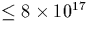
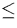
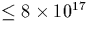
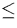

There is various other important kinetic, electronic and
impurity-complex related information that is relevant to this work.
The initial total TD formation rate at 450 C is proportional to
[Oi]n, n=4 [179] initially suggesting early TDs
contained 4 O atoms; later work has shown this to be a function of
both [Oi][242] (for [Oi] cm-3 n was close to 1), and temperature[243]. At
lower temperatures (T  400
C is proportional to
[Oi]n, n=4 [179] initially suggesting early TDs
contained 4 O atoms; later work has shown this to be a function of
both [Oi][242] (for [Oi] cm-3 n was close to 1), and temperature[243]. At
lower temperatures (T  400 C) n=2, and this increases at
450
C) n=2, and this increases at
450 C to n=4 as seen earlier. This suggests that at lower
temperatures, oxygen dimerisation is the rate dominating step, but at
higher temperatures this is replaced with simple Oi diffusion. At
500
C to n=4 as seen earlier. This suggests that at lower
temperatures, oxygen dimerisation is the rate dominating step, but at
higher temperatures this is replaced with simple Oi diffusion. At
500 C, n increases further.
C, n increases further.
Uniaxial stress measurements on the electronic IR absorption associated with the TDs has also allowed symmetry assignments. This also showed C2v symmetry [244,245], with the effective-mass like donor state constructed from a single pair of conduction band valleys [246] along [001] [247]. The C2 axis is compressive and lies along [001] [248].